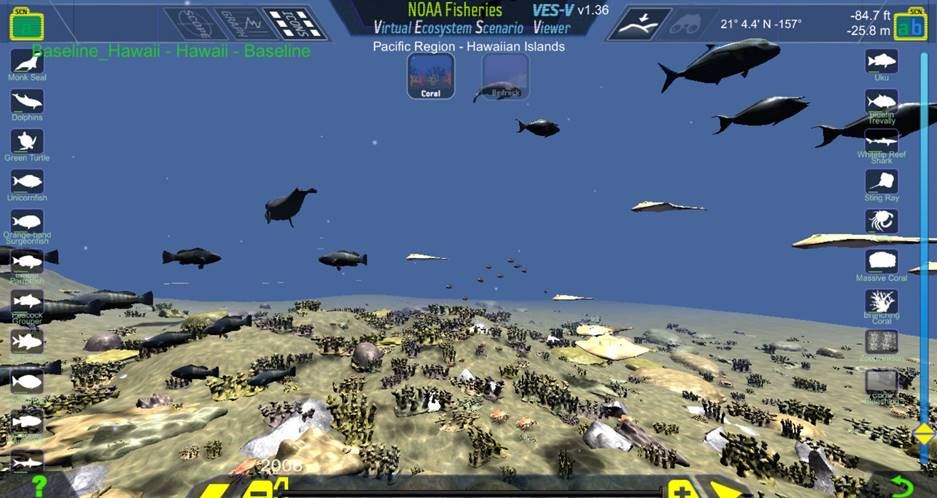

Type: Visualization Tool

Successfully managing and recovering marine species in today’s busy ocean requires us to understand the entire ecosystem and the suite of impacts on their survival, rather than considering just one species at a time. NOAA Fisheries is using sophisticated ecosystem modeling tools, coupled with input from stakeholders, to explore the tradeoffs inherent in natural resource management decisions. The models incorporate classic population biology and a range of climate, environmental, ecological and human impacts to the ocean. These models, which are relied on by our scientists and managers, provide essential data for making well informed decisions. However, the complexity that makes the models robust can also limit the ability of many audiences to understand and use the information provided. The underlying dynamics of these models are complex, and a new tool aims to show the results of those dynamics in an easy-to-view manner.To address the concerns noted above, NOAA Fisheries has developed a new, innovative software program called Virtual Ecosystem Scenario Viewer (VES-V). VES-V visually illustrates the responses of virtual marine ecosystems to a range of living marine resource management scenarios. Visualizations can help many audiences see the potential for widespread application of models in our work managing marine resources. This tool will facilitate stakeholder engagement and input for exploring tradeoffs among scenarios in future living marine resource management decisions for our nation’s large marine ecosystems. The main purpose of this tool is to demonstrate how we can better present and visualize marine ecosystems, their marine resources, and their collective responses to a range of pressures. VES-V can be directly linked to and utilize output files from ecosystem models such as Atlantis, Multi-Species Production and Age-Structured Models, or Ecopath with Ecosim to explore different marine management scenarios. VES-V is designed to handle a wide range of model outputs and data, such as survey time series or even multiple single-species stock assessment outputs could also be used to explore this virtual ocean world.
Code Repository Badges